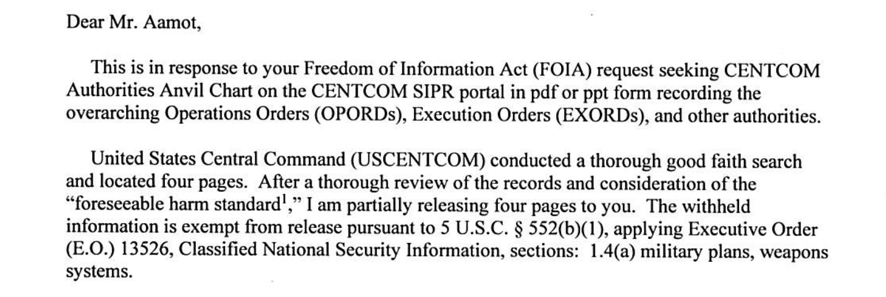
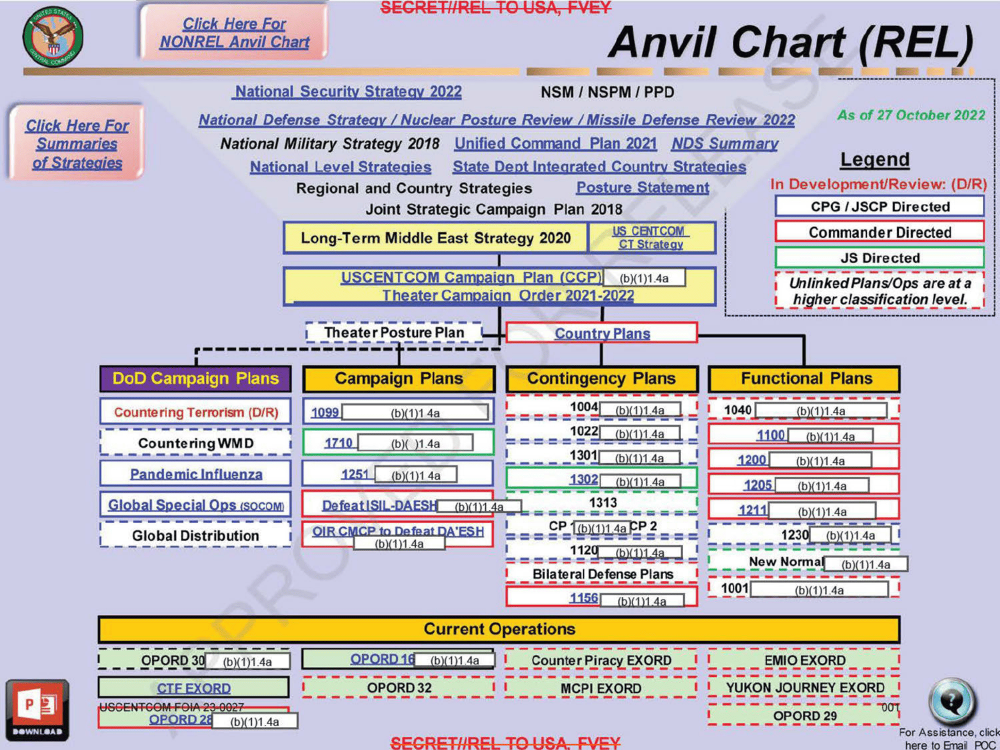
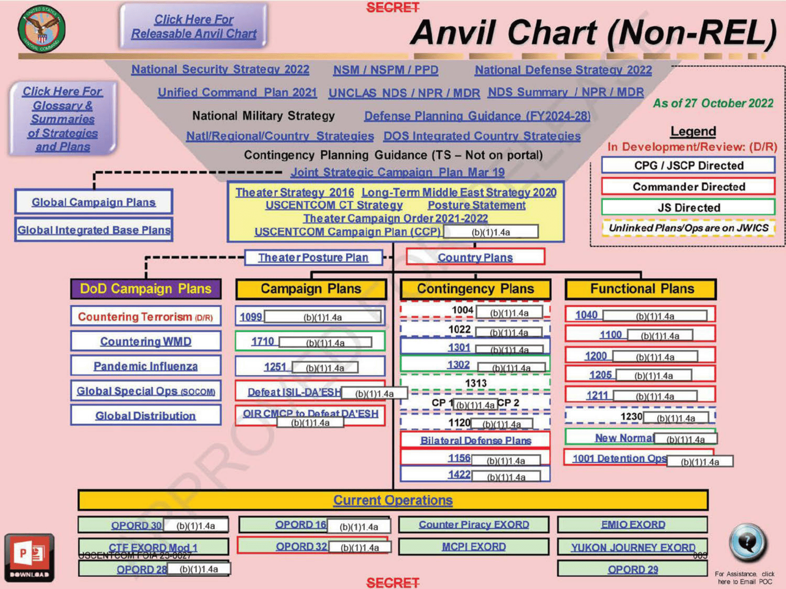
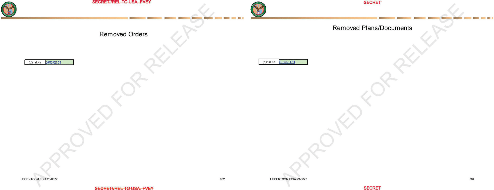

America has been trading fire with Iran, on and off, since February 28. The president has sent Congress a stack of war-powers letters. CENTCOM, the command running the fight, has put out a steady stream of press releases. Yet the only public map of the orders behind CENTCOM's operations is a four-page chart dated October 27, 2022, and most of its entries sit next to withheld boxes.
That chart came out through a Freedom of Information Act request for CENTCOM's "Authorities Anvil Chart." CENTCOM's reply said it "conducted a thorough good faith search and located four pages." It released those four pages, minus everything covered by exemption (b)(1), which protects classified national-security information.
Here is the argument. Bombs, drones, and AI tools get the budget headlines. But the Iran war keeps exposing a slower, quieter weakness: authority. Who can order what, under which document, approved by whom, and how fast. Fix that, or the hardware money buys less speed than Washington thinks.
What CENTCOM Released

An "anvil chart" is a one-page diagram of how a command's guidance flows. It starts broad at the top and narrows to the orders troops actually carry out. Two terms matter here. An operation order (OPORD) is a commander's directive to subordinate commanders for carrying out an operation. An execute order (EXORD) is the order, issued through the Chairman of the Joint Chiefs at the defense secretary's direction, that puts a presidential decision to start an operation into effect. Both terms come from the Pentagon's joint dictionary and planning doctrine.
CENTCOM released two versions of the chart. One is marked for release to Five Eyes partners ("REL"). The other is the U.S.-only "Non-REL" version. At the top of both are the National Security Strategy, the National Defense Strategy, and the Unified Command Plan. Below them sit CENTCOM's campaign plan, its "Theater Campaign Order 2021-2022," and boxes of numbered contingency and functional plans. At the bottom is a row labeled "Current Operations": OPORDs 16, 28, 29, 30, and 32, plus EXORDs labeled Counter Piracy, MCPI, EMIO, CTF, and YUKON JOURNEY. CENTCOM did not define those abbreviations, and this piece does not guess at them.


Pages 2 and 4 are titled "Removed Orders" and "Removed Plans/Documents." Each shows a single entry, OPORD 31, next to a withheld box.

What CENTCOM Withheld, and Why
The letter cites 5 U.S.C. § 552(b)(1), which exempts matters "specifically authorized under criteria established by an Executive order to be kept secret in the interest of national defense or foreign policy." The executive order is E.O. 13526. Its section 1.4(a) covers "military plans, weapons systems, or operations." The letter quoted only the first two items: "military plans, weapons systems."
That fits with what's blank. Nearly every withheld box sits beside a plan number, a campaign plan, or an order. Those are military plans by definition, and real war plans should stay secret.
But look at what the chart shows even with the redactions. The public version is four years old. It names a "Long-Term Middle East Strategy 2020" and a "Theater Campaign Order 2021-2022." Its own legend warns that unlinked plans live "at a higher classification level." And CENTCOM's search for the chart turned up exactly four pages.
It's a map of a filing system. Today's war runs on that filing system.
The Legal Stack Under the Iran War
Start at the top. Every war-powers letter on Iran reviewed for this piece rests on the president's Article II powers, not on a law passed by Congress.
After Operation Midnight Hammer, the June 21, 2025, strike on Fordow, Natanz, and Esfahan, President Trump wrote that he "acted pursuant to my constitutional authority as Commander in Chief and Chief Executive." His March 2, 2026, letter on the February 28 strikes said the same. So did the letters on June 9, June 26 and 28, July 7, July 27 in Iraq, and September 1.
The statutes don't fill the gap. The 2001 AUMF, Congress's post-9/11 authorization for military force, covers those who "planned, authorized, committed, or aided the terrorist attacks that occurred on September 11, 2001." The 2002 Iraq AUMF is gone. Congress repealed it, along with the 1991 Iraq authorization, in the fiscal 2026 defense bill, signed December 18, 2025. The Congressional Research Service reports that the House has approved three resolutions, and the Senate one, directing removal of U.S. forces from hostilities with Iran. None of the president's letters cites a statute as authority.
The War Powers Resolution sets the clock. The president must report "within 48 hours" after introducing forces into hostilities. Within sixty days, he must stop unless Congress authorizes the fight. The administration's May 1 letter declared that "The hostilities that began on February 28, 2026, have terminated." Fighting resumed in June.
Next comes Title 10 versus Title 50. Title 10 of the U.S. Code governs the armed forces. Title 50 covers intelligence work, including covert action, where "the role of the United States Government will not be apparent or acknowledged publicly." The Iran strikes are openly acknowledged military operations. That puts them on the Title 10 side. Under 10 U.S.C. § 164, a combatant commander gives "authoritative direction over all aspects of military operations, joint training, and logistics." CENTCOM is that commander's headquarters, and its OPORDs and EXORDs are where Article II decisions turn into missions.
Joint doctrine describes the steps in between. JP 5-0, Joint Planning, is "the keystone document for joint planning." JP 3-0, Joint Campaigns and Operations, covers how campaigns are run. Together they lay out the chain from strategy to campaign plan to contingency plan to order. That chain is the anvil.
Midnight Hammer also drew on other commands. Gen. Dan Caine, chairman of the Joint Chiefs, said the strike package "was supported by U.S. Strategic Command, U.S. Transportation Command, U.S. Cyber Command, U.S. Space Command." Cyber and information operations have their own joint publications, JP 3-12 and JP 3-13. But the Joint Staff's public doctrine pages now say "A full list of joint doctrine publications may be found on JEL+. (CAC required)." A CAC is the Pentagon's ID card. Even the doctrine has an access problem.
A War That Never Quite Ends
CENTCOM's ongoing operations make this concrete. The blockade of Iranian ports resumed July 14. By October 10, CENTCOM said, "Four commercial vessels have been disabled and 135 ships have been turned around." On September 1, it "completed a wave of strikes" on air defenses, radars, and mine-laying gear. On July 29, it "completed a heavy wave of strikes against Iran." Meanwhile, the command ended the Operation Inherent Resolve mission in Iraq on September 30.
The Congressional Research Service calls the pattern "intermittent U.S. military action." Each round brings another letter, another set of targets, and another round of approvals. When a war runs in pulses, how fast the authorities move matters as much as how fast the aircraft move.
Where Authorities Meet Modernization
Munitions. The Lead Inspector General's September report, as quoted by CRS, relayed a Pentagon finding that munitions use "has resulted in strategic inventory shortfalls and revealed industrial base bottlenecks for munition resupply." The BBC reported that the watchdog's figures show more than $22 billion spent on munitions from February through June. Interceptors are the sharpest pain point. CRS cites an April think-tank estimate that the U.S. had used "over half of its Patriot and Terminal High Altitude Area Defense (THAAD) interceptors." The White House rejects the watchdog's assessment.
Counter-drone. The Pentagon's counter-drone task force, JIATF-401, said "The $350 million worth of commitments JIATF-401 has made over the last thirty or so days in support of Operation Epic Fury" covered gear already fielded and gear still on the way. An Air University summary of student research on Epic Fury says ad hoc drone defenses were "severely constrained by fragmented interagency authorities and a lack of pre-authorized defensive postures." It recommends "lowering the delegation of engagement authorities." That is the authorities problem in plain terms.
Command and control. Joint all-domain command and control (JADC2) is the Pentagon's plan to link sensors and shooters across services. Brig. Gen. Jeffrey Phillips, the Air Force's deputy chief of staff for warfighter communications and cyber systems, said, "We were building that alternate and that contingency on the fly." Early in the war, airmen borrowed the intelligence community's deployable JWICS kits to get connected. That is the same top-secret network the Non-REL chart points to for its unlinked plans.
AI-enabled targeting. Adm. Brad Cooper, CENTCOM's commander, said AI tools "can turn processes that used to take hours and sometimes even days into seconds." He added: "Humans will always make final decisions on what to shoot and what not to shoot and when to shoot." That human step is exactly where authorities live. Speeding up the software does nothing for the approval chain.
The Barrier Is the Read-On, Not the Hardware
Clearance is not the same as access. A planner can hold a Top Secret clearance, carry orders to a combatant command, and still spend the opening weeks of a deployment discovering that none of those facts unlocks the systems where the mission lives. What they need are read-ons—formal access to a classified program—and a seat in a SCIF, a Sensitive Compartmented Information Facility: an accredited room where classified work is allowed to happen. Intelligence Community Directive 705 is blunt: "All SCI must be processed, stored, used, or discussed in an accredited SCIF."
At home station, that space and those accesses are often missing. Units with limited SCIF capacity cannot give incoming planners the terminals, accounts, and need-to-know approvals they need to prepare before they leave. The result is a catch-22: planners are told to learn the mission before arriving, but much of the material is available only after arriving. In theater they learn the operation, the execute orders, and the authorities at the Secret, Top Secret, and ACCM levels on the job. ACCM stands for Alternative Compensatory Control Measures—extra need-to-know controls on classified information when standard protections are not enough and Sensitive Compartmented Information or Special Access Program protections are not warranted, per DoD Manual 5200.01 guidance summarized by the Center for Development of Security Excellence.
That is the Anvil Chart problem from the other end. The map exists. CENTCOM's FOIA reply described it as an Authorities Anvil Chart on the command's SIPR portal. But the people who need to click the links get the access late—or never get a working link at all. Legacy portals break. Repositories move. A clearance does not equal an account on the right system, and an account does not equal a completed read-on.
The infrastructure backlog makes that worse. A June 2026 Department of War review of the defense research enterprise found that "The Sensitive Compartmented Information Facility (SCIF) accreditation lifecycle is severely extended by manual, sequential reviews," compounded by "a critical shortage" of TEMPEST technical authorities and accrediting officials. GAO told Congress in February 2026 that agencies took an average of 206 days to finish the fastest 90 percent of initial Top Secret clearances—92 days past the 114-day goal—and that average times have trended longer since fiscal 2022. Clearance delays and SCIF shortages are not planner anecdotes. They are audited, public facts.
The Fix
Not everything here is classified, and fixing it doesn't require breaking secrecy.
First, Congress should do its job. With the 2002 AUMF repealed and the 2001 AUMF written for al-Qaeda, the Iran fight rests on Article II and a pile of 48-hour letters. Congress can authorize the war, condition it, or end it. Leaving it to the letters isn't a policy.
Second, the Pentagon should treat its authorities map as a weapons system. Give it a single system of record. Put dates on every version. Make sure the links actually work. Let a planner check access before deployment instead of after. When someone clicks on the map, the road should actually go somewhere.
Third, push engagement authority down where the threat moves fastest. Drones and missiles don't wait for a slide deck. The Air University research says as much. Pre-delegated, pre-approved defensive authorities cost nothing in munitions, and they don't run out.
And fourth, release more. A four-year-old org chart with numbers blacked out tells the public nothing about the actual plans. That's fine. But it also shows the system has room for routine, dated, unclassified authority summaries. Those would cost the enemy nothing and would help the voters paying for the war.
Fifth, start the read-ons and the SCIF capacity before the plane leaves. Pre-deployment program access and home-station SCIF seats for planners cost less than lost weeks of on-the-job learning in theater. The implementation standard is the same as for the map: access has to arrive early enough to matter.
Peace through strength needs paperwork that works.
Records referenced: CENTCOM FOIA response and released pages stamped "USCENTCOM FOIA 23-0027," records obtained through FOIA. The released PDF is available here.